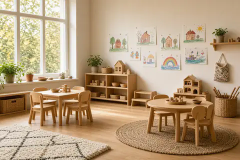

Bårdshaugen Barnehage
Foreldreeid barnehage i sentrum på Skei i Surnadal. Vi har 46 barn mellom 1 og 5 år og er åpne hverdager 06.45–17.15.
Hva vil du gjøre?
- Søke plassFrist 15. februar
- Ringe en avdelingRevehiet, Bjørnehiet, Sæterlia
- Se åpningstider og priser06.45–17.15, kostpenger
- Jobbe hos ossÅpen søknad
Søke plass
Du søker plass hos oss gjennom Surnadal kommune. Kommunen har ett felles opptak for alle barnehagene.
Frist for hovedopptaket er 15. februar. [Fylles inn: hva som gjelder for søknader etter fristen]
Før du søker
Ring kontoret hvis du lurer på noe før du søker. [Fylles inn: om dere tar imot besøk før søknad, og hvordan]
Ringe en avdeling
Gjelder det barnet ditt i dag, ringer du avdelingen direkte. Andre spørsmål tar du med kontoret.
- Revehiet
- 954 97 759 · de minste barna
- Bjørnehiet
- 954 94 816 · de eldste barna
- Sæterlia
- 410 79 426 · friluftsavdelingen ved alpinanlegget
- Kontoret
- 957 67 873 · post@baardshaugen.no
- Daglig leder
- Reetta Järvinen, 411 22 302, reetta@baardshaugen.no
Besøksadresse og postadresse: Bårdshaugvegen 25, 6650 Surnadal.
Åpningstider og priser
- Åpent
- Mandag til fredag 06.45–17.15
- Stengt
- [Fylles inn: planleggingsdager og ferier]
- Kostpenger
- 405 kr i måneden
- Foreldrebetaling
- [Fylles inn]
Jobbe hos oss
Vi har 15 faste ansatte. 56,8 prosent er barnehagelærere, og vi oppfyller pedagognormen. Vil du jobbe her som barnehagelærer, fagarbeider eller vikar, kan du sende en åpen søknad.
Send åpen søknad til post@baardshaugen.no
Spørsmål og svar
Hva er Sæterlia?
Sæterlia er friluftsavdelingen vår. Den ligger ved alpinanlegget i Surnadal. [Fylles inn: hvem som går der og hvordan barna kommer seg dit]
Hvor mange voksne er det per barn?
Ifølge Utdanningsdirektoratet er det 5,9 barn per ansatt og 10,3 barn per barnehagelærer.
Hva sier foreldrene?
I foreldreundersøkelsen 2026 ga foreldrene 4,9 av 5 i samlet tilfredshet. Ute- og innemiljø og informasjon fikk 4,4. Bare 12 svarte (27,9 prosent), så resultatet er usikkert.
Hva må barnet ha med?
[Fylles inn: klesliste og hva barnehagen holder]
Om barnehagen

Bårdshaugen Barnehage AS eies av foreldrene og tar ikke ut utbytte. Pengene brukes i barnehagen, til økt bemanning, miljø og innhold.
Målet er at barnehagen skal være et godt sted å være for barn og voksne. Visjonen er «Trygg på neste steg».
Styreleder er Espen Røv, 932 68 352. Følg oss på Instagram.
Sist oppdatert: [Fylles inn]